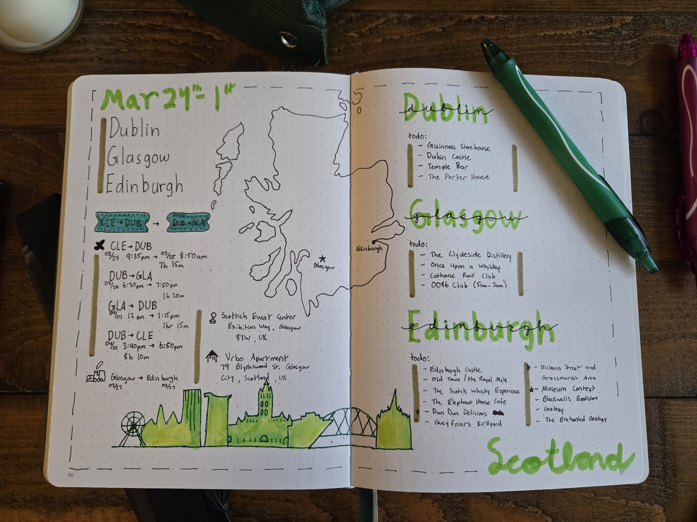
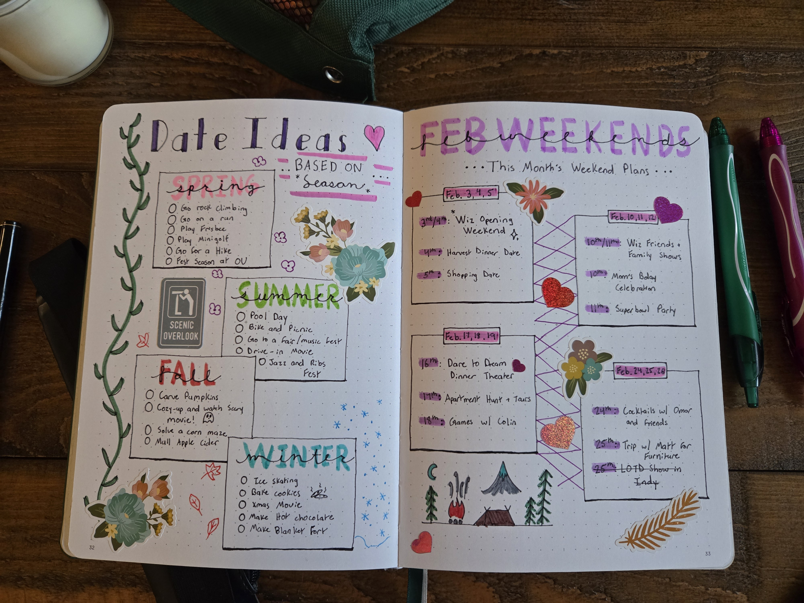
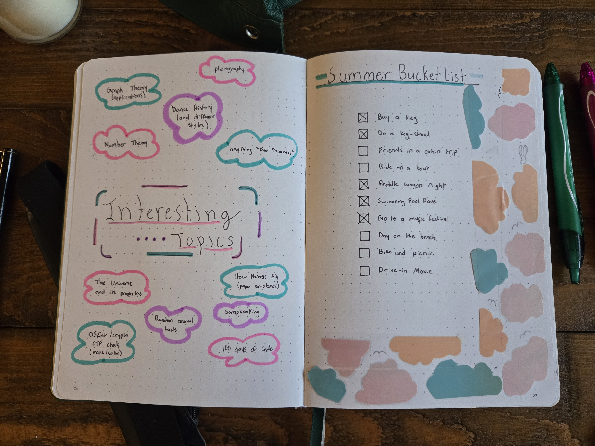
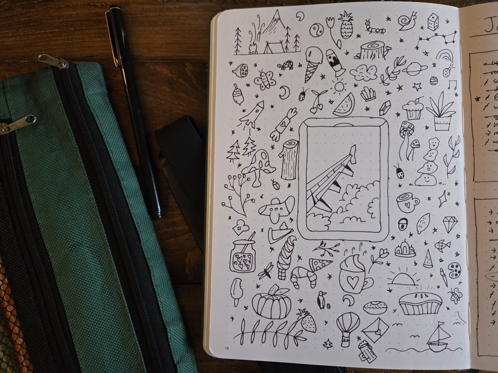
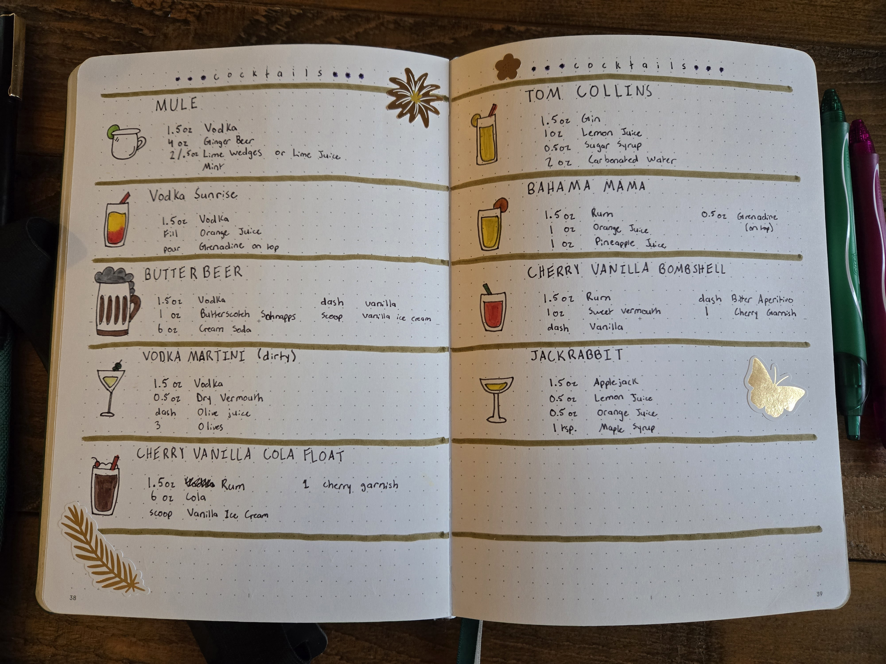

My All Time Favorite Bullet Journal Spreads
I absolutely love when I have the time to really put effort into a page. It’s the perfect opportunity to use my fancy pens and stickers. Usually, I’ll practice the design on another page first to make sure everything looks just right. Here’s a collection of my favorite pages that I’ve created so far.
Scotland Trip Page
When I was preparing for my trip to Scotland, I wanted to create a page to commemorate the adventure. I free-handed the outline of the country in pencil, including many of the small islands that surround it, and then went over it with pen. On the right side, I listed the cities we were visiting and some food/entertainment suggestions. On the left side, I added our trip itinerary. This page is one of my favorites so far—I love how it turned out!

February & Seasonal Bucket List
For February, I wanted to do something special for the month. I also had some super cute stickers I wanted an excuse to use! This spread is busier than most of my pages, which is exactly why I love it. It stands out when I flip through my journal. On the right, I organized and celebrated the events I had going on every weekend. On the left, I created a seasonal bucket list with activities I like to do each season. It’s a great reminder of the fun things I want to experience throughout the year.

Summer Bucket List with Magazine Collage
For this page, I used different mediums to fill the space. I cut out pieces from an Ulta Beauty magazine and turned them into clouds for a border. While I think I could’ve used a better adhesive than Scotch tape, it worked well enough! This spread became a summer bucket list, as I find myself daydreaming about all the things I want to do in the upcoming season. I’ve made a few seasonal bucket lists like this, and I always enjoy looking back on them.

Doodle Page
I like to call this one my “doodle page.” It was quick to make, filled up a lot of spare time, and turned out as a fun accent in my journal. I started doodling in one corner and kept going until I had filled the whole page! I especially like to do this during lectures—it helps me stay focused and engaged. Plus, it’s a great way to add a little something extra between the more functional pages.

Cocktail Page
This next page is one of my favorites because of how clean and polished it turned out. I had a few new cocktails I wanted to try, so I wrote them down and illustrated each cocktail glass. The gold lines across the page add a nice touch, and drawing each glass was so much fun!

Those are my current favorite pages! I hope they inspire you to create your next favorite spread. Happy journaling!